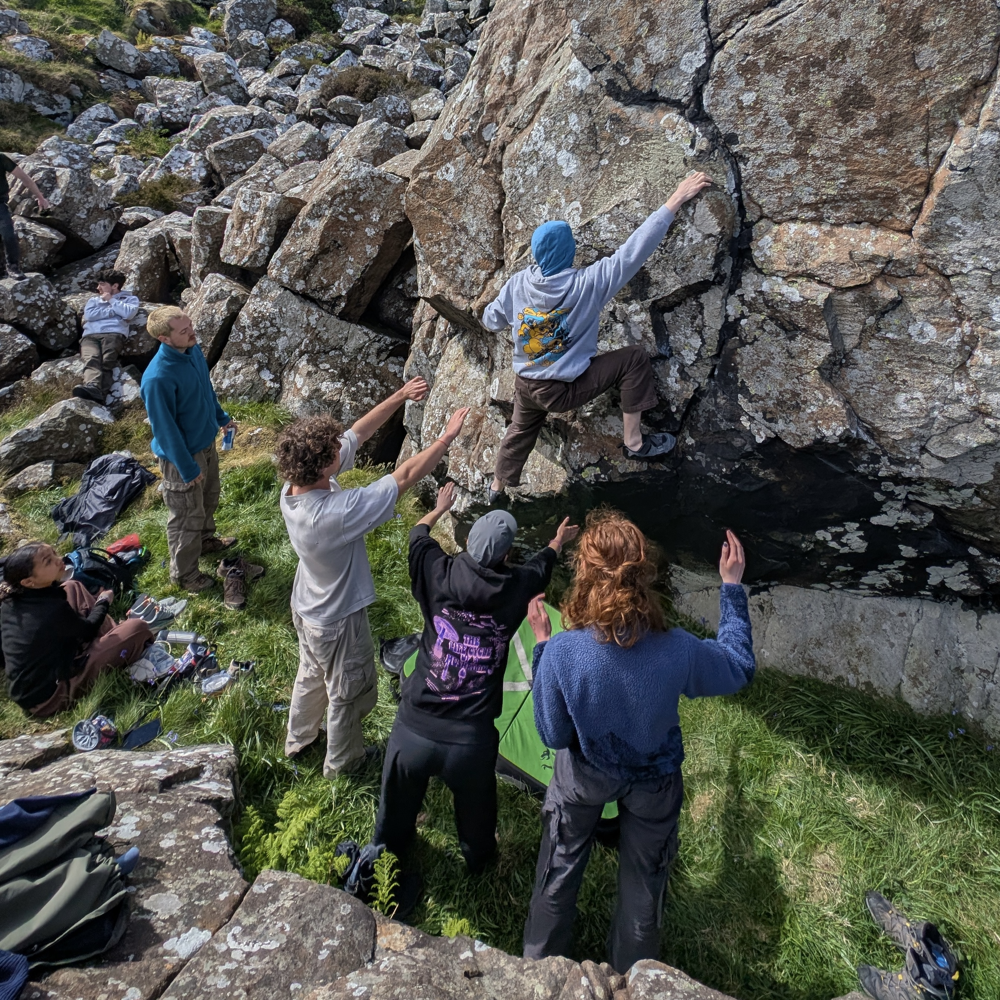
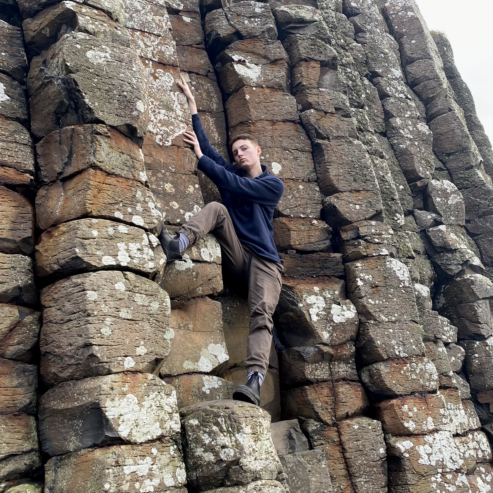
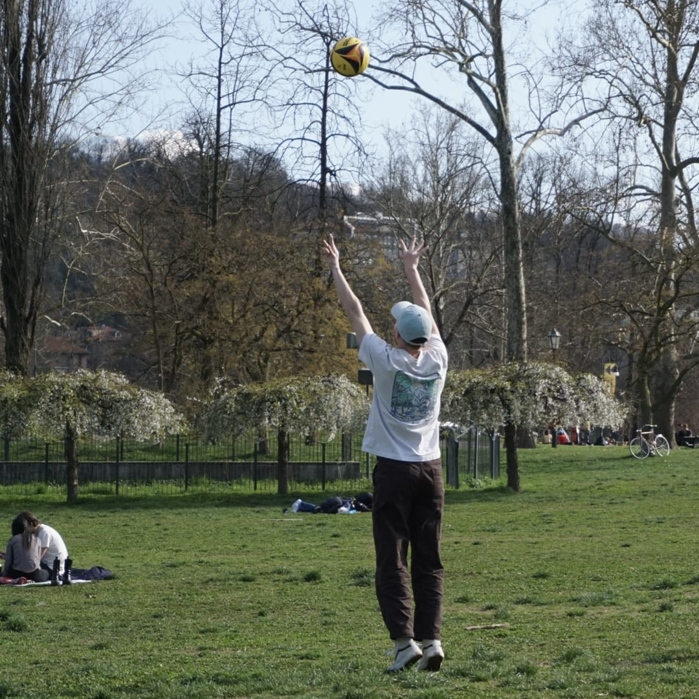
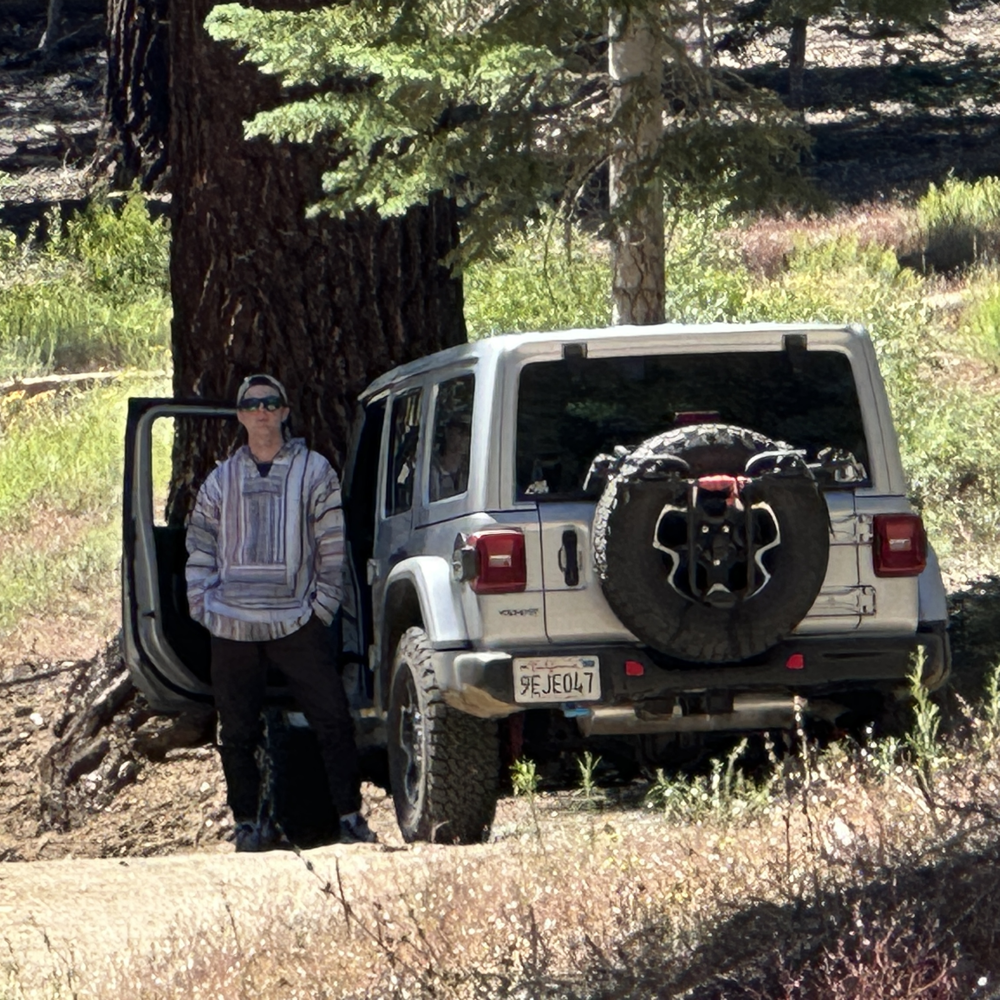
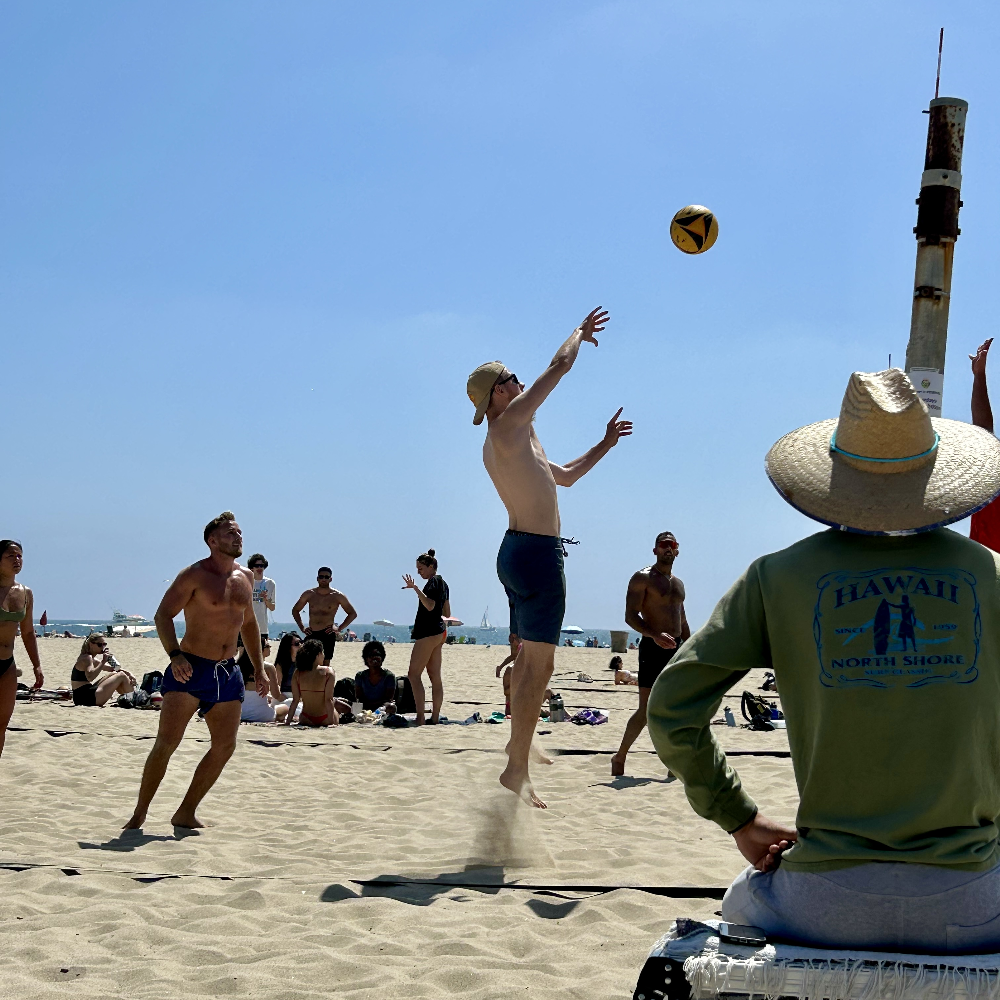
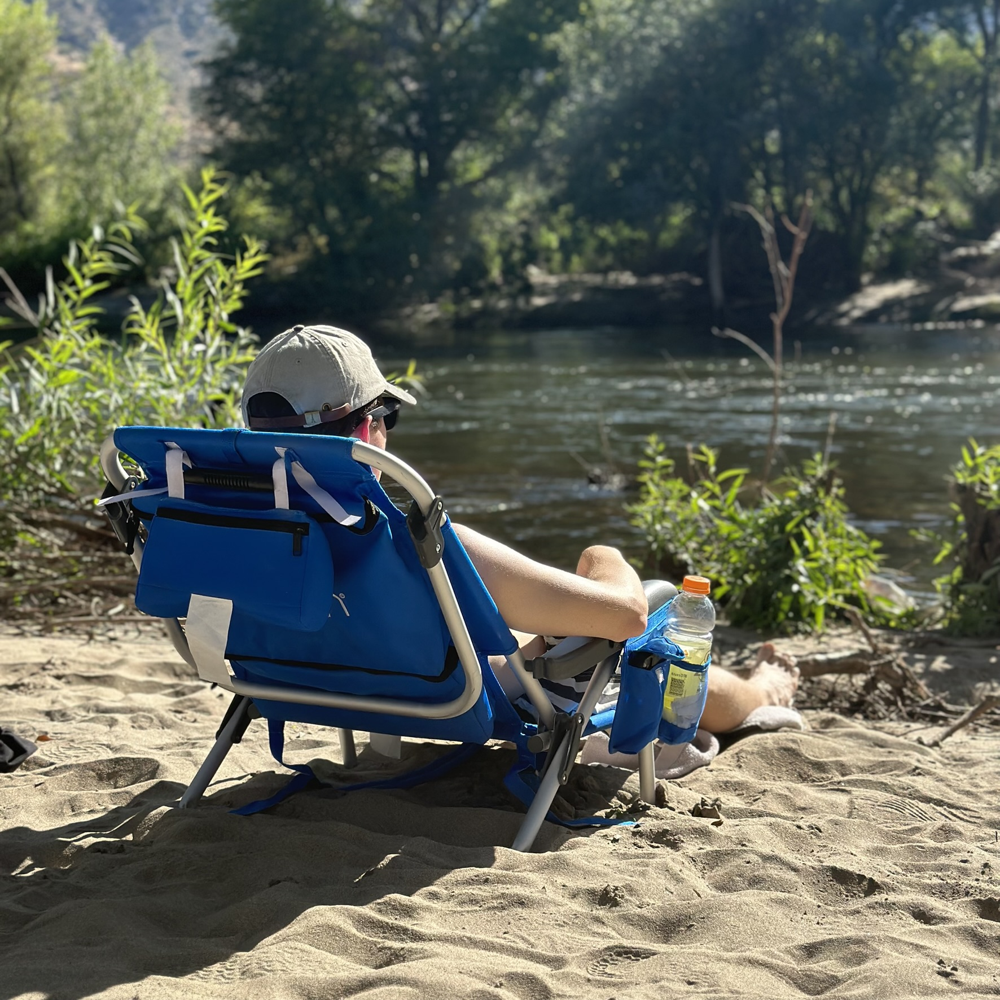
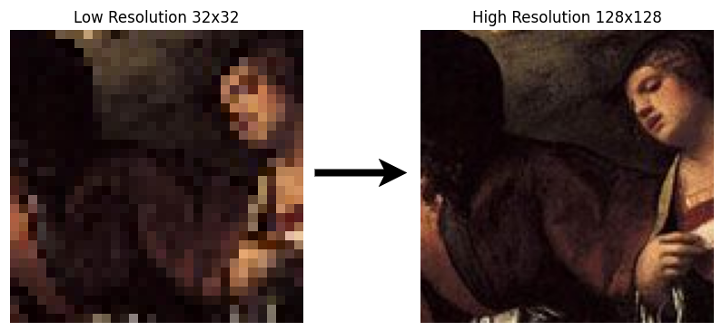

Personal Website Development
A responsive personal portfolio website built with HTML, CSS, and JavaScript to showcase my projects and skills
After obtaining my Computer Engineering MEng from Trinity College Dublin, I am now back in Los Angeles and looking for what's next. I've built full-stack apps from the ground up, shipped real code in production at a fintech startup, and picked up valuable insights from my superiors along the way. I care a lot about actually understanding how things work, not just making them run. In my free time, you can find me in the middle of a new personal project or enjoying a nice day on the beach (or both). I also care deeply about where technology is going, and I'm always pushing to stay ahead of it, whether that means picking up new tools, following the latest research, or just building something for the sake of it.






A responsive personal portfolio website built with HTML, CSS, and JavaScript to showcase my projects and skills
Using TensorFlow and the Keras API, I built a CNN that takes a 32×32 image and upsamples it to 128×128

A Flask application for previewing PDFs, drawing bounding boxes on them, and extracting text from selected regions
Real-time air quality dashboard for any US location: live AQI, pollutant breakdown, EPA environmental justice context, 30-day PM2.5 trends, and nearby cleaner air
Color-coded map of housing displacement risk across every LA census tract, scored from public ACS, permit, and market data. Click any tract to see why it scored that way.
If the form doesn’t load, please reach out on LinkedIn.